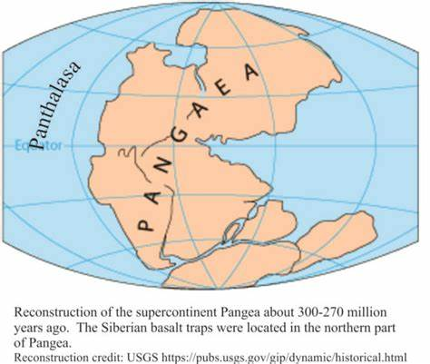
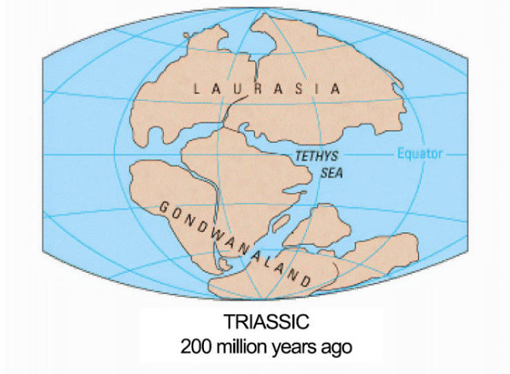
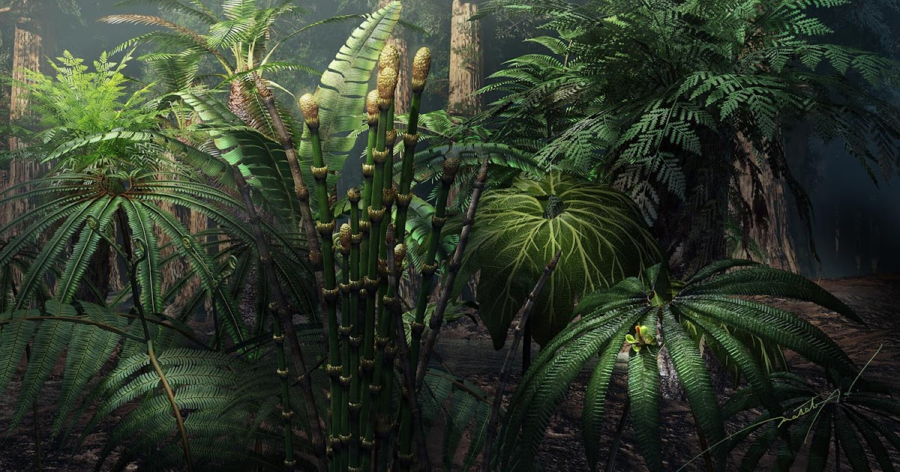
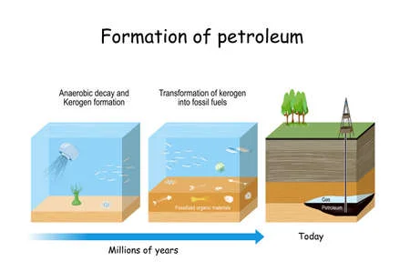
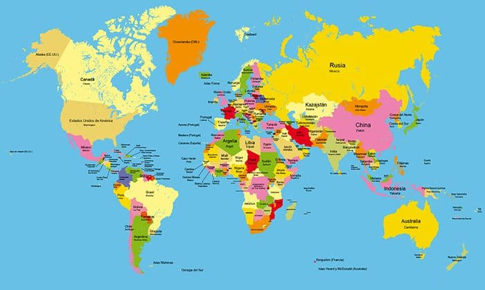
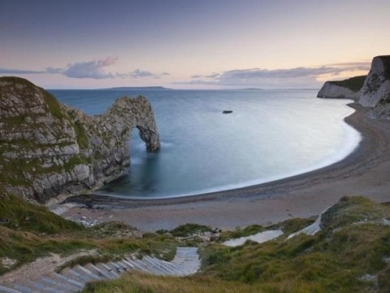
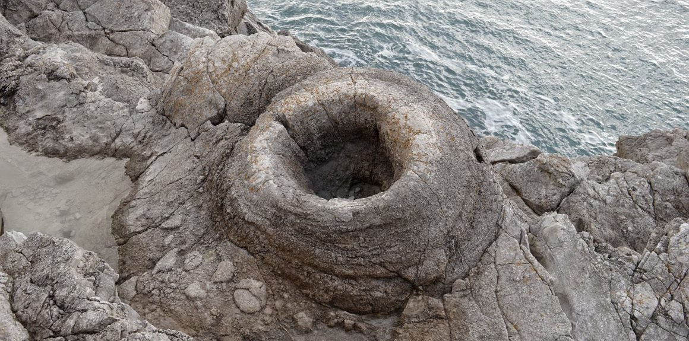
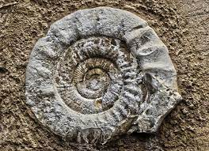

El Jurásico está caracterizado por:
-Se le considera "La era de los dinosaurios" porque fue la etapa de mayor esplendor de estos seres.
-Los continentes estaban unidos porun gran continente llamado Pangea. En el jurásico este gran continente va ha empezar a separarse, dando lugar a los continentes Laurasia y Gondwana.


Provocó la aparición de nuevos océanos donde se situaba pangea, de poca profunndidad pero con gran cantidad de vidad.
También favoreció la variedad de especies (hubo más vegetación, con enormes bosques y junglas, sobre todo en latitudes altas) .
Además en el Jurásico superior subió el nivel del mar dando lugar a muchas inundaciones.
En los mares también evolucionaron deiversas especies de peces y reptiles.
El clima cambió a uno más húmedo y cálido, con un mayor número de precipitaciones aunque no se cree que existieran los casquetes polares,
provocando una mayor vegetación, surgiendo muchos tipos de plantas.

Al final del Jurásico, los mares empezaron a secarse, dejando depósitos
gruesos de caliza en donde se formaron algunas acumulaciones de petróleo y de gas.

Hace unos 160 millones de años, hubo una rotura entre África con América que abrió lentamente el océano Atlántico.
De igual manera ocurrió entre la India y África que provocó la aparición de otro océano, el Índico.

En el oeste de Europa, había extensas secuencias marinas, que nos indican que hubo un tiempo donde gran parte del
continente estaba sumergido bajo mares tropicales poco profundos, destaca la Costa Jurásica y los lagerstätten de Holzmaden y Solnhofen.



 Inicio
Inicio